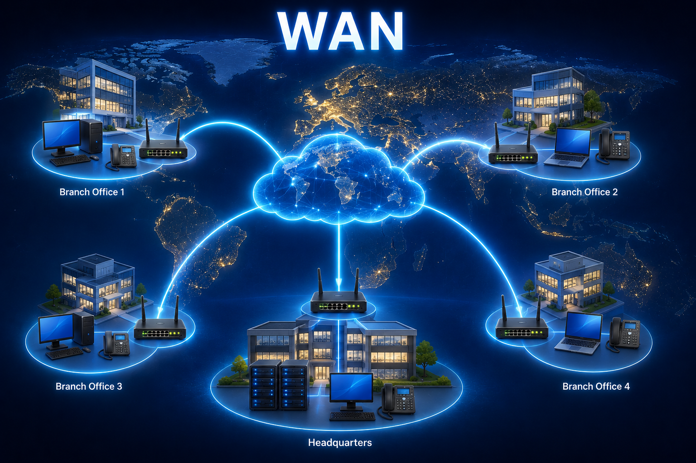

Mission:
Tap the items in the diagram, reveal the key information, answer both questions,
then unlock the clue to your next QR location.
Full hunt progress loading...

Tap the branch offices, headquarters, cloud, WAN links and map to explore the WAN topology.
What is a WAN?
A Wide Area Network connects networks over a large geographical area.
A WAN can link buildings, bases, towns, regions, countries or global sites. It is commonly used to connect
separate LANs together through service provider networks, leased lines, fibre, satellite or other communications links.
Benefits of a WAN
Connects users and sites across large distances.
Allows branch offices to access shared services.
Supports centralised systems, cloud services and remote working.
Can connect multiple LANs into one wider organisation network.
Limitations of a WAN
Can be slower than a local network due to distance and provider links.
May depend on external service providers.
Can be more expensive to install, operate and maintain.
Security, routing and resilience need careful design.
RAF/AES Example
A WAN could connect separate RAF stations, headquarters, training sites or deployed locations so users can access shared services.
For Communication Infrastructure Technicians, WAN awareness helps explain why local cabling, cabinets, routers,
switches and external links must all work together to provide reliable communications.
Quick Check 1
Question: What does WAN stand for?
✅ Correct. WAN stands for Wide Area Network.
❌ Not quite. WAN stands for Wide Area Network.
Quick Check 2
Question: What is the main purpose of a WAN?
✅ Correct. A WAN connects networks across large geographical areas.
❌ Not quite. The main purpose of a WAN is to connect networks over large distances.
🔒 Clue locked. Explore all WAN items and answer both quick-check questions.
Next QR Clue Unlocked
TP6 Networks | Complete all 9 QR tasks to finish the hunt.